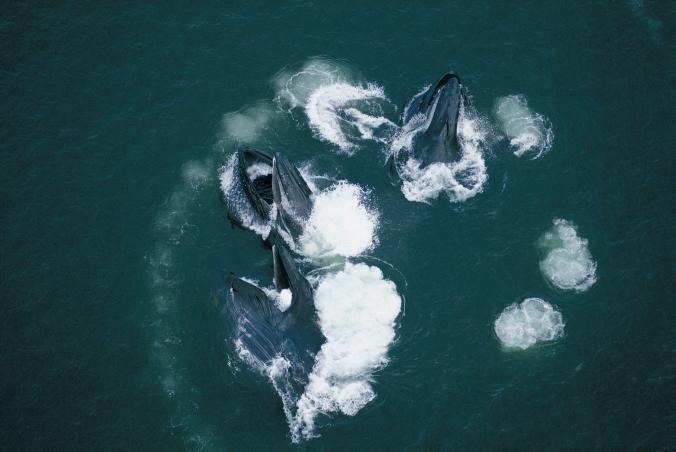
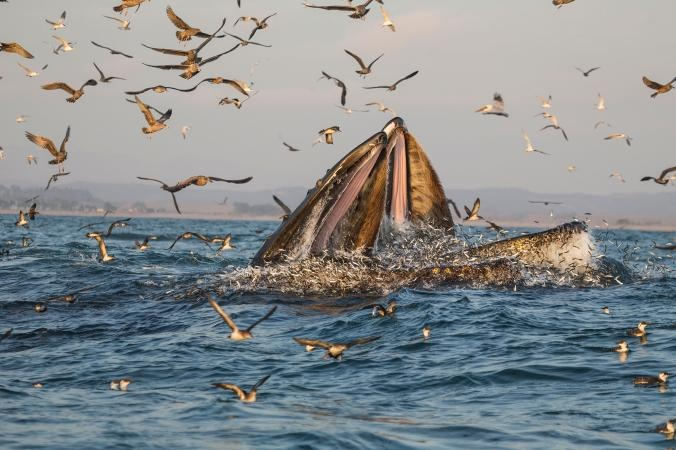
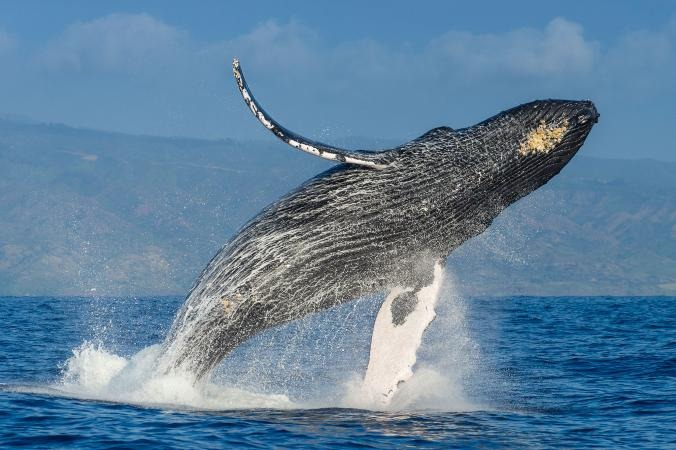

TALE OF A WHALE
Without flukes, feeding is difficult: Gray whales need their tails as a propeller to navigate headfirst into the muddy seafloor and filter out small crustaceans. What's more, the species' lengthy migration from birthing grounds in Mexico to feeding grounds in the Arctic becomes extremely challenging without a tail to power their journey.
See "A Gray Whale Breaks the Record for the Longest Mammal Migration. Flukeless mothers also can't defend their calves from killer whales.
That said, Schulman-Janiger, a whale biologist who runs the American Cetacean Society's Gray Whale Census and Behavior Project, is fascinated by some animals' ability to adapt to their handicap.
JUST A FLUKE?
The uptick in gray whale sightings is in line with a general increase in whale entanglements over the years. Between 2000 and 2012, the number of such incidents averaged 10 per year, according to NOAA. In 2017, there were 31, Folkens says. The reason for the rise is unknown, though people might just be better at noticing them, says Folkens. But there are also more whales around to become entangled. Populations of grays, blues, and humpback whales have flourished in recent years, he says. Some entangled whales can be rescued—trained wildlife experts freed six of those 31 reported cases in 2017 on the U.S. West Coast, Folkens says—and a few break free on their own.

Snapping Shrimp 'Dinner Bell' May Tell Gray Whales When to Eat

Get Up Close With Wildlife in Mexico's Magdalena Bay

Where It’s Okay to Pet the Whales
 National Geographic, 7 May 2018
National Geographic, 7 May 2018